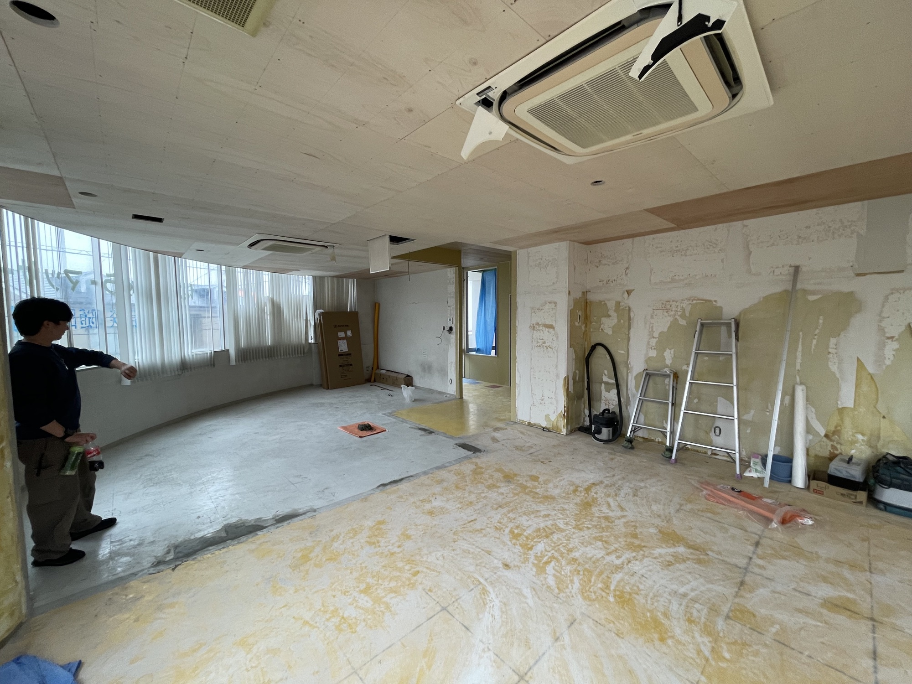
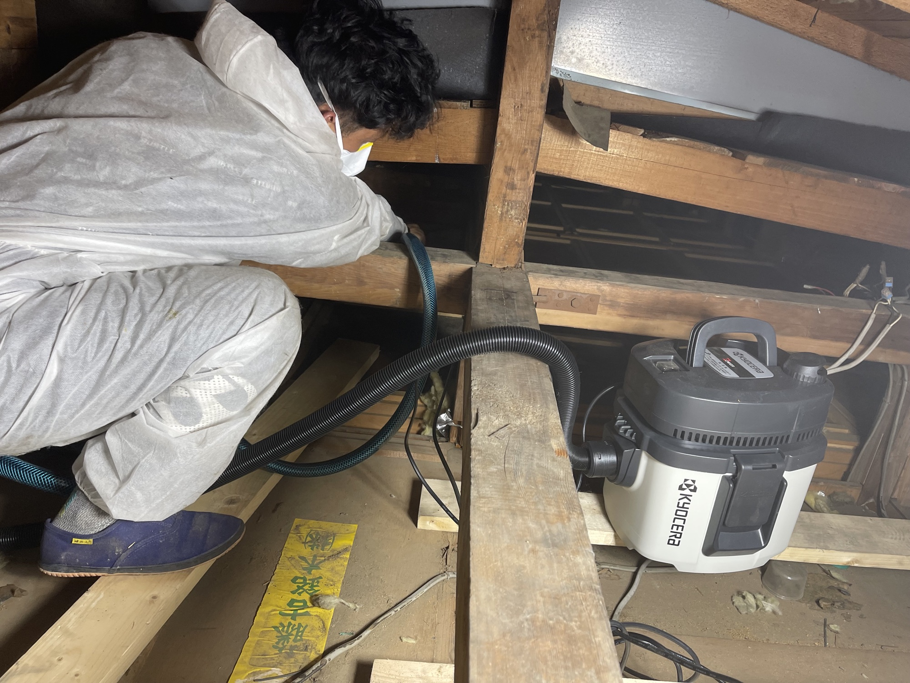

木造住宅
25年以上の大工経験を活かし、構造・納まり・耐久性まで見据えた施工を行います。

新築から小さな修繕まで。建物の構造と傷み方を知る大工だからできる、領域に縛られない仕事。
一般には別々の業者へ依頼する内容も、状況を一つにつなげて考え、一括で対応します。
25年以上の大工経験を活かし、構造・納まり・耐久性まで見据えた施工を行います。
用途や動線、ブランドの空気感を読み取り、下地から仕上げまで形にします。
雨漏れや腐食などの原因を探り、表面的ではない根本改善を目指します。
侵入口の調査と封鎖、駆除、消毒、清掃、傷んだ箇所の補修まで対応します。
塗る前に下地を確認。腐食や雨水の侵入経路を補修し、建物を長持ちさせます。
住まい方の変化に合わせた間取り・内装・設備の改修を柔軟に行います。
